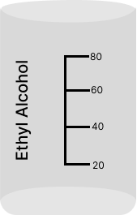

00 : 00 : 00 : 000
- A
- B




| Trial 1 | Trial 2 | Trial 3 |
|---|---|---|
| 00 : 000 | 00 : 000 | 00 : 000 |
Click on desired liquid's beaker to fill the respective liquid into the tube.
1. Click on the sucker tube to suck out the liquid upto mark A.
2. Liquid should be at point A before you start descending it.
1. When the liquid is at position A, click on the stopwatch play button to gradually descend the liquid.
2. Pause the stopwatch at the moment when the liquid passes point B